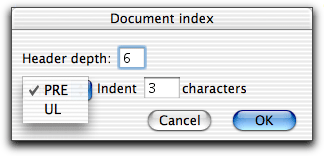

This page documents the four last functions of the HTML Utilities menu.
This page documents the four last functions of the HTML Utilities menu.
This page documents the four last functions of the HTML Utilities menu.
<!-- #LASTMODIFIED TEXT="some text" FORM="date format" LANG="language"--> some text and date <!-- /#LASTMODIFIED -->
Whenever the document is saved the date is updated. Do not write anything between the comment tags. It will be removed when the document is saved.
Character translation is done automatically of the text and date.
When you use Last Modified... in the HTML Utilities menu a dialog box is opened where you can specify:
Note! The short time format can be confusing. For example 4/5/66 means 4 May 1966 in some parts of the world and April 5, 1966 in other parts.

The index can be done using either PRE or an UL list. When Alpha makes the index it goes through the window and looks for all headers. If there is an anchor <A NAME="..."> inside a header that anchor is used when building the index, otherwise an anchor is inserted inside the header. Alpha then inserts
<!-- #DOCINDEX TYPE="PRE,3" DEPTH="6" --> the index <!-- /#DOCINDEX -->
The index consists of a list with links to the various headers.